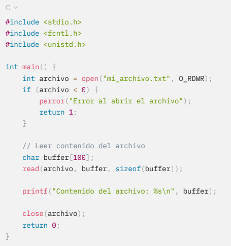
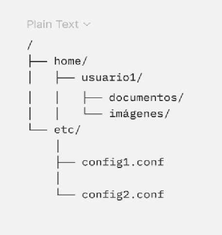
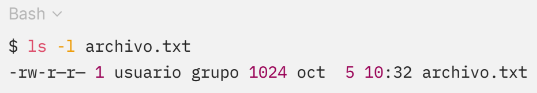
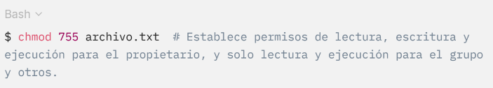

4.1.1 Capa del sistema de archivos
La capa del sistema de archivos se encarga de manejar tareas fundamentales sobre archivos y directorios, tales como su creación, modificación, lectura y eliminación. Actúa como una interfaz entre las aplicaciones y el hardware, ocultando la complejidad de las operaciones de bajo nivel que se llevan a cabo en los dispositivos de almacenamiento. Esta capa se compone de diversas subcapas, cada una desempeñando un rol específico en la administración de datos.
La capa del sistema de archivos se puede segmentar en múltiples subcapas o componentes, cada uno con una función particular en la gestión de los datos. Estas subcapas incluyen:
Esta sección del sistema de archivos funciona como un intermediario entre los usuarios, las aplicaciones y el sistema de archivos, permitiendo ejecutar tareas fundamentales como abrir, cerrar, leer y escribir archivos. En sistemas como UNIX y Linux, estas funciones se gestionan mediante llamadas al sistema como open(), read(), write() y close().
Código 1.
Ejemplo de impresión de contenido en archivo.

En este ejemplo, el archivo se abre y su contenido se lee mediante llamadas al sistema que forman parte de la interfaz del sistema de archivos.
La capa del sistema de archivos maneja los nombres de archivos y la estructura de carpetas, permitiendo a los usuarios organizar sus archivos en directorios y subdirectorios. Utiliza una tabla de carpetas para almacenar ubicaciones. También es responsable de la distribución y administración del espacio en el almacenamiento, decidiendo cómo se asignan bloques de disco y optimizando el almacenamiento para minimizar la fragmentación. Los sistemas de archivos utilizan diversas estrategias para distribuir espacio, como bloques en ext4 y clústeres en NTFS.
Por ejemplo, en sistemas operativos como Linux, la estructura jerárquica se organiza en forma de árbol, donde el directorio raíz (/) es la raíz del sistema de archivos, y debajo de él se encuentran otros directorios y archivos organizados de manera recursiva.
Figura 5.
Ejemplo de jerarquía de directorios.

En este ejemplo, los archivos están organizados bajo varios directorios, siguiendo una estructura jerárquica clara.
Esta subcapa se encarga de la distribución y gestión del espacio en el dispositivo de almacenamiento. Cada vez que se genera un archivo o se amplía, el sistema de archivos debe determinar cómo asignar bloques de disco para guardar los datos. La gestión eficiente del espacio en disco incluye la identificación de bloques libres, la liberación de bloques que ya no se requieren y la optimización del almacenamiento para minimizar la fragmentación.
Los sistemas de archivos utilizan diferentes estrategias para distribuir espacio en disco. Algunos, como el sistema de archivos ext4 en Linux, utilizan una estrategia basada en bloques, donde los archivos se dividen en bloques de tamaño fijo que se asignan de manera contigua cuando es posible. Otros sistemas de archivos, como NTFS en Windows, utilizan una estructura de clústeres y pueden fragmentar un archivo en múltiples ubicaciones si no hay espacio contiguo suficiente.
Administra metadatos como permisos, fechas y tamaños, asegurando su sincronización con los datos correspondientes.
Por ejemplo, en sistemas como ext4, los metadatos se almacenan en inodos, que contienen toda la información necesaria para localizar los datos de un archivo en el disco y para mantener los atributos del archivo. Cada archivo y directorio tiene un inodo asociado que el sistema utiliza para gestionar su ubicación y propiedades.
Código 2.
Permisos de metadatos.

En este caso, los metadatos incluyen los permisos (-rw-r—r—), el propietario (usuario), el grupo (grupo), el tamaño del archivo (1024 bytes), y la fecha de última modificación (oct 5 10:32).
Fundamentales para la integridad en sistemas multiusuario, utilizando esquemas numéricos o simbólicos.
Los permisos generalmente se representan utilizando un esquema numérico o simbólico, como en los sistemas basados en UNIX, donde los permisos se dividen en tres grupos: propietario, grupo y otros, con permisos de lectura (r), escritura (w) y ejecución (x).
Código 3.
Asignación de permisos.

Ejemplo práctico: Función de la capa del sistema de archivos
Supongamos que alguien desea copiar un archivo de un directorio a otro. Este proceso implica varias operaciones que son gestionadas por la capa del sistema de archivos:
- Busca en la tabla de directorios el lugar físico del archivo en el dispositivo de almacenamiento.
- Se acceden segmentos del dispositivo de almacenamiento que tienen información de los ficheros y se copian en la memoria
- Se genera nuevamente entrada a la tabla de directorios del destino, asociando un nuevo inodo al archivo copiado
- Se asignan bloques de disco libres para almacenar los datos en la nueva ubicación
- Se actualizan los metadatos del archivo copiado, como la fecha de creación y los permisos
Este proceso es completamente administrado bajo la capa del sistema de archivos, sin que el usuario necesite conocer los detalles de la asignación de bloques o el manejo de inodos.
Es una parte esencial en la estructura del sistema operativo que facilita el intercambio entre los usuarios y las aplicaciones con los datos almacenados en el sistema. A través de múltiples subcapas, como la interfaz de usuario, la gestión de nombres y directorios, la asignación de espacio en disco, y el control de acceso, esta capa abstrae la complejidad de las operaciones en los dispositivos de almacenamiento, ofreciendo una interfaz coherente y eficiente para el manejo de los archivos.